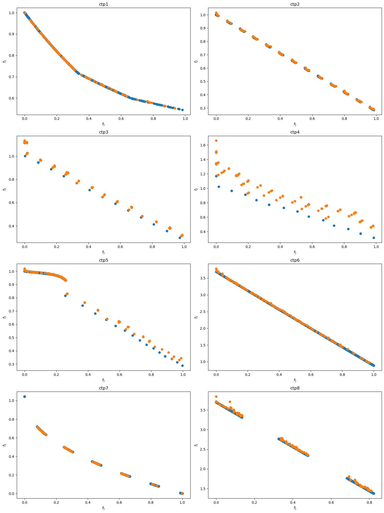

import random
import numpy as np
from pymoo.core.population import Population, pop_from_array_or_individual, merge
from pymoo.core.individual import Individual
from pymoo.core.evaluator import Evaluator
from pymoo.util.dominator import get_relation
from pymoo.problems import get_problem
from pymoo.indicators.igd import IGD
from pymoo.visualization.scatter import Scatter
from pymoo.operators.survival.rank_and_crowding import RankAndCrowdingRLMODE
基于强化学习的受约束多目标优化问题差分进化算法
李伽扬 罗毅 吴扬
大纲
- 前置知识
- 受约束的多目标优化问题
- 差分进化
- 强化学习
- 算法原理
- 代码实现
- 性能表现
前置知识
受约束的多目标优化问题
受约束的多目标优化问题（Constrained Multi-Objective Optimization Problems，CMOPs）是指在优化过程中同时需要优化多个目标，并且这些目标通常是相互冲突的，同时还必须满足一定的约束条件。在工业应用中，许多优化问题都是受约束的多目标优化问题。例如：
- 在微合金钢的成分设计中，需要优化两个关键目标：屈服强度和抗拉强度；
- 无人机路径规划中，需要在总飞行路径长度和地形威胁之间做权衡；
- 弧焊机器人路径规划中，需要同时考虑能耗和轨迹的平滑性；
- 废物管理中，最大化利润的同时，最小化旅行时间和成本；
- 在处理浅水湖泊污染问题时，需要兼顾最大化经济效益和最小化磷污染。
数学形式表述
这些问题的共同特点是目标之间存在冲突，无法通过单一解同时优化所有目标。因此，CMOPs通常通过定义如下的数学形式化表示：
\[\begin{aligned}&F\left(x\right)=\left(f_{1}\left(x\right),f_{2}\left(x\right),\ldots,f_{i}\left(x\right),\ldots,f_{m}\left(x\right)\right)\\&s.t.\left\{\begin{array}{c}g_{j}\left(x\right)<0,j=1,2,\ldots,q\\h_{j}\left(x\right)=0,j=q+1,q+2,\ldots,p\\x\in R^{n}\end{array}\right.\end{aligned}\]
其中，\(F(x)\) 是包含 \(m\) 个维度的目标向量，\(x\) 是包含 \(n\) 个维度的解向量。\(g_j(x)\) 表示不等式约束，\(h_j(x)\) 表示等式约束，\(q\) 和 \(p-q\) 分别表示不等式和等式约束的数量。在处理等式约束时，通常引入一个很小的正数 \(\delta\)，将等式转化为不等式。
判断可行解
为了判断解是否可行，可以通过计算约束违约度来衡量解对约束的满足情况：
\[\left.\begin{aligned}&cv\left(x\right)=\sum_{j=1}^{p}cv_{j}\left(x\right)\\&cv_{j}\left(x\right)=\left\{\begin{array}{c}max\left\{g_{j}\left(x\right),0\right\},j=1,2,\ldots,q\\max\left\{\left|h_{j}\left(x\right)\right|-\delta,0\right\},j=q+1,q+2,\ldots,p\end{array}\right.\end{aligned}\right.\]
如果 \(cv(x)=0\)，则表示该解 \(x\) 满足所有约束，即为可行解。否则为不可行解。所有可行解构成可行解集 \(S\)。在解集 \(S\) 中，定义支配关系：如果一个解 \(x_1\) 的所有目标值不大于另一个解 \(x_2\)，并且至少在一个目标上优于 \(x_2\)，则称 \(x_1\) 支配 \(x_2\)。所有不被其他解支配的解称为Pareto 最优解，它们构成的解集称为Pareto 最优解集 (Pareto Optimal Set, PS)，而相应的目标值构成的前沿称为Pareto 前沿 (Pareto Front, PF)。
差分进化
差分进化算法（Differential Evolution，DE）是一种基于种群的进化算法，首次由Storn和Price在1997年提出，最初用于解决Chebyshev多项式系数问题。由于其在连续优化问题中的鲁棒性和表现出的高效性，DE算法逐渐被广泛应用于各类优化问题中。它的主要优势在于算法简单且灵活，容易应用于实际问题。
差分进化算法的核心思想是通过种群中个体之间的差异来引导搜索方向，逐步演化得到最优解。它的工作流程主要包括以下几个步骤：
1. 种群初始化
DE算法的初始种群由 \(NP\) 个个体组成，每个个体的维度为 \(D\)。个体表示为 \(X_i=\left\{X_i^1,X_i^2,\ldots,X_i^D\right\}\)，其中 \(i\) 是个体的索引，\(D\) 是问题的维度。为了让初始种群尽可能覆盖整个搜索空间，通常通过均匀随机的方式在搜索空间 \([X_{min},X_{max}]\) 内生成每个个体：
\[X_i=X_{min}+rand\times(X_{max}-X_{min})\]
其中，\(rand\) 是介于 0 和 1 之间的随机数，\(X_{min}\) 和 \(X_{max}\) 分别是搜索空间的上下边界。
2. 变异
变异是差分进化的核心操作之一，它通过种群中其他个体的差异来生成新的候选解。DE算法中最常用的变异操作是“DE/rand/1”，其公式为：
\[V_i=X_{r_1}+F\times(X_{r_2}-X_{r_3})\]
其中，\(X_{r_1}\)、\(X_{r_2}\) 和 \(X_{r_3}\) 是种群中随机选出的三个不同个体，\(F\) 是一个放大因子（一般介于0到1之间），用于放大向量差异 \(X_{r_2}-X_{r_3}\)。通过这种方式，DE算法产生了一个新的变异向量 \(V_i\)。
3. 交叉
变异后，算法通过交叉操作生成候选解。DE算法使用二项式交叉（binomial crossover）将变异向量 \(V_i\) 和当前个体 \(X_i\) 进行组合，生成一个试验向量 \(U_i=\left(u_i^1,u_i^2,\ldots,u_i^D\right)\)：
\[\left.u_i^j=\left\{\begin{array}{c}v_i^j\quad rand_j\leq CR\ \text{or}\ j==j_{rand}\\x_i^j\quad otherwise\end{array}\right.\right.\]
其中，\(CR\) 是交叉概率（范围在 0 到 1 之间），\(rand_j\) 是每个维度上的随机数，\(j_{rand}\) 是一个随机维度索引，保证至少有一个维度来自 \(V_i\)。
4. 选择
选择操作是基于贪婪策略的，目的是从当前解 \(X_i\) 和试验解 \(U_i\) 中选择更优的解。如果试验解 \(U_i\) 的表现优于当前解 \(X_i\)，则用 \(U_i\) 替换 \(X_i\)，否则保留 \(X_i\)。选择公式如下：
\[X_i=\left\{\begin{array}{c}U_i\quad U_i\preccurlyeq X_i\\X_i\quad otherwise\end{array}\right.\]
如果 \(U_i\) 优于 \(X_i\)，则替换为 \(U_i\)；否则，保持 \(X_i\) 不变。
强化学习
强化学习（Reinforcement Learning, RL）是一种机器学习技术，它通过智能体（agent）与环境的交互来实现学习。智能体从环境中获得状态（state），根据当前状态采取行动（action），并从环境中获得奖励（reward）。通过不断试错和反馈，智能体逐渐学习到如何在不同状态下采取合适的行动，从而最大化累积的奖励。这种反馈机制使得强化学习在处理未知且动态的系统时表现尤为出色。强化学习的核心思想是通过与环境的反复交互，逐步优化智能体的策略，使得它能够在不断变化的环境中做出最佳决策。强化学习通常包含五个主要成分：
- 环境（Environment）：智能体与之交互的外部系统。
- 状态（State）：当前环境的信息或智能体所处的情况。
- 行动（Action）：智能体在某一状态下选择的操作。
- 奖励（Reward）：环境对智能体所执行行动的反馈，用于指导学习过程。
- 智能体（Agent）：负责学习和决策的主体。
强化学习
强化学习的过程通常是一个闭环，如图中所示。智能体根据当前状态采取行动，环境根据智能体的行动给出反馈（即奖励），然后智能体使用该反馈更新其策略或值函数，以便在未来的状态下采取更好的行动。

Q-learning
Q-learning 是一种无模型（model-free）的强化学习技术。它通过更新 Q 值来评估每个状态-行动对的价值，并根据这些 Q 值来选择最佳行动。其更新公式为：
\[ Q_{t+1}(s_t, a_t) = Q_t(s_t, a_t) + \alpha \left[ r_{t+1} + \gamma \max Q(s_{t+1}, a) - Q_t(s_t, a_t) \right] \]
其中：
- \(s_t\)：表示在第 t 次迭代时智能体的状态；
- \(a_t\)：表示在状态 \(s_t\) 下采取的行动；
- \(Q_t(s_t, a_t)\)：是当前状态-行动对的 Q 值；
- \(r_{t+1}\)：是执行该行动后得到的奖励；
- \(\alpha\)：是学习率，控制 Q 值更新的速度，取值范围在 0 到 1 之间；
- \(\gamma\)：是折扣因子，控制未来奖励的影响程度，取值也在 0 到 1 之间。
伪代码
算法 Q-learning
输入参数： \(\alpha, \gamma\)
输出状态： \(s\)
初始化 Q 表；
随机选择一个状态 \(s_t\)；
当停止条件未满足时，执行以下步骤：
从 Q 表中为当前状态 \(s_t\) 选择最佳动作 \(a_t\)；
执行动作 \(a_t\)，并获得相应的奖励 \(r\)；
确定下一状态 \(s_{t+1}\) 的最大 Q 值；
根据前文中的公式更新 Q 表；
更新状态 \(s_t = s_{t+1}\)；
结束
算法原理与实现
Q-learning in RLMODE
在我们的RLMODE算法中，使用了Q表。Q表是一个矩阵，其列代表动作 \(a\)，行代表状态 \(s\)，如表中所示：
| 状态 | 动作 | |||
|---|---|---|---|---|
| \(a_1\) | \(a_2\) | … | \(a_n\) | |
| \(s_1\) | \(Q(s_1,a_1)\) | \(Q(s_1,a_2)\) | … | \(Q(s_1,a_n)\) |
| \(s_2\) | \(Q(s_2,a_1)\) | \(Q(s_2,a_2)\) | … | \(Q(s_2,a_n)\) |
| … | … | … | … | … |
| \(s_m\) | \(Q(s_m,a_1)\) | \(Q(s_m,a_2)\) | … | \(Q(s_m,a_n)\) |
个体被定义为RLMODE中的代理（agent）。 对于每个代理 \(a\)，通常使用SoftMax函数来确定在状态 \(s\) 中应该采取哪个动作。
SoftMax函数：\(\pi\left(s_j,a_j\right)=\frac{e^{Q_t\left(s_j,a_j\right)\Big/_T}}{\sum_{j=1}^ne^{Q_t\left(s_j,a_j\right)\Big/_T}}\)
其中，\(Q_{t}\left(s_{j},a_{j}\right)\) 是在第 \(t\) 次迭代时Q表中的Q值，\(n\) 是动作的数量。基于Q表中的值，代理可以计算其采取的动作的概率。
通过强化学习的反馈机制
通过差分进化（DE）算法，后代 \(U_i\) 是由父代 \(V_i\) 生成的。考虑到约束，可能会同时存在可行解和不可行解。因此，我们有以下八种情况，如下表所列：
| 状态 | 父代 (\(U_i\)) | 后代 (\(V_i\)) | 状态 | 奖励 |
|---|---|---|---|---|
| 1 | 可行 | 可行 | \(V_i≼U_i\) | 1 |
| 2 | \(U_i≼V_i\) | −1 | ||
| 3 | \(U_i\) 和 \(V_i\) 不能相互支配 | 0 | ||
| 4 | 可行 | 不可行 | \(U_i≼V_i\) | −1 |
| 5 | 不可行 | 可行 | \(V_i≼U_i\) | 1 |
| 6 | 不可行 | 不可行 | \(V_i≼U_i\) | 1 |
| 7 | \(U_i≼V_i\) | −1 | ||
| 8 | \(U_i\) 和 \(V_i\) 不能相互支配 | 0 |
通过强化学习的反馈机制
这八种情况可以分为三类。
第一类包括第一、第五和第六种状态，其中后代优于父代。观察表明当前的局部搜索方向是有效的。我们可以进一步加强局部搜索，使变异向量有更多机会朝向帕累托前沿移动。由于搜索方向正确，奖励值为1。变异标量因子 \(F\) 可以进一步减小，交叉率 \(CR\) 可以增加，以增强局部搜索。因此，我们设定 \(F_f=-0.1, CR_f=0.1\)。
第二类包括第二、第四和第七种状态，后代劣于父代。当前的局部搜索方向可能无效。我们可以通过增加标量因子 \(F\) 和交叉率 \(CR\) 来增强全局搜索，以推动算法跳出局部最优。因此，我们设定 \(F_f=0.1, CR_f=0.1\)。由于搜索方向不正确，奖励值为-1。
剩余的情况属于第三类，其中父代和后代不能相互支配。它们具有相同的状态。我们将奖励值设为0。标量因子 \(F\) 和交叉率 \(CR\) 保持不变，\(F_f=0, CR_f=0\)。
因此，三种相应的操作为：\(F_{f}=-0.1, CR_{f}=0.1; F_{f}=0.1, CR_{f}=0.1; F_{f}=0, CR_{f}=0\)。
通过强化学习的反馈机制
这些操作被转换为反馈机制，用于更新RLMODE的参数，如下所示：
\[\begin{aligned}&F=F_f+F\\&CR=CR_f+CR\end{aligned}\]
更新后的参数用于生成后代向量 \(U_i\)。根据SoftMax函数确定应采取哪个操作。可以计算 \(U_i\) 的目标值和约束。由于CDP简单且稳健，我们在这里采用它来比较生成向量 \(U_i\) 和原始向量 \(X_i\)。如果生成的向量能够支配父代，则奖励值设为1，状态变为1。如果父代能够支配生成的向量，状态变为2；如果它们无法相互支配，状态设为3。最后，我们更新Q表，并通过非支配拥挤排序从后代 \(U_i\) 和父代 \(X_i\) 中选择 \(NP\) 个体。然后，以 \(NP\) 个体和更新的参数开始下一次迭代。由于每个个体可能具有不同的状态并采取不同的操作，因此在迭代过程中它们的 \(F\) 和 \(CR\) 值也会不同。
算法流程图

代码实现
导入相关库
Q-learning
def softmax(values, T=1.0):
exp_values = np.exp(values / T)
return exp_values / np.sum(exp_values)
class Qlearning:
def __init__(self, num_states, num_actions, alpha=0.1, gamma=0.9):
self.num_states = num_states
self.num_actions = num_actions
self.alpha = alpha
self.gamma = gamma
self.q_table = np.zeros((num_states, num_actions))
def choose_action(self, state):
probabilities = softmax(self.q_table[state])
return np.random.choice(self.num_actions, p=probabilities)
def update(self, state, action, reward, next_state):
next_max = np.max(self.q_table[next_state])
self.q_table[state, action] += self.alpha * (reward + self.gamma * next_max - self.q_table[state, action])子代生成
def get_offspring(pop, F, CR, index):
num_pop = pop.shape[0]
num_var = pop.shape[1]
offspring = np.zeros(num_var)
idxs = np.random.choice(num_pop, 3, replace=False)
a, b, c = pop[idxs]
mutant = a + F[index] * (b - c)
jrand = np.random.randint(num_var)
for j in range(num_var):
if np.random.rand() < CR[index] or j == jrand:
offspring[j] = mutant[j]
else:
offspring[j] = pop[index][j]
if offspring[j] > BOUND_UP[j] or offspring[j] < BOUND_LOW[j]:
offspring[j] = random.uniform(BOUND_LOW[j], BOUND_UP[j])
return offspring初始化
# 获取问题
problem = get_problem("ctp7")
pf = problem.pareto_front()
ind = IGD(pf)
random.seed(0)
np.random.seed(0)
num_states = 3
num_actions = 3
qlearning = Qlearning(num_states, num_actions)
BOUND_LOW, BOUND_UP = problem.bounds()
num_gen = 150
num_pop = 100
state = random.randint(0, num_states - 1)
F_table = np.random.random(num_pop)
CR_table = np.random.random(num_pop)
F_j = np.zeros(num_pop)
CR_j = np.zeros(num_pop)主程序
x_max = np.array([BOUND_UP])
x_min = np.array([BOUND_LOW])
pop = np.random.rand(num_pop, problem.n_var) * (x_max - x_min) + x_min
pop = pop_from_array_or_individual(pop)
pop = Evaluator().eval(problem, pop)
for i in range(num_gen):
offsprings = []
for j in range(num_pop):
F_table[j] = F_table[j] + F_j[j]
CR_table[j] = CR_table[j] + CR_j[j]
if F_table[j] > 1 or F_table[j] < 0:
F_table[j] = random.random()
if CR_table[j] > 1 or CR_table[j] < 0:
CR_table[j] = random.random()
offspring = Individual()
offspring.X = get_offspring(pop.get("X"), F_table, CR_table, j)
offspring = Evaluator().eval(problem, offspring)
action = qlearning.choose_action(state)
F_j[j] = [-0.1, 0.1, 0][action]
CR_j[j] = [0.1, 0.1, 0][action]
reward = [0, 1, -1][get_relation(offspring, pop[j])]
next_state = [2, 0, 1][reward]
qlearning.update(state, action, reward, next_state)
state = next_state
offsprings.append(offspring)
offsprings = Population.create(*offsprings)
pop = merge(pop, offsprings)
pop = RankAndCrowding().do(problem, pop)[:num_pop]
# The result found by the algorithm
A = problem.evaluate(pop.get("X"), return_values_of=["F"])
print(f"{i}", "IGD", ind(A))0 IGD 0.04791505187151208
1 IGD 0.049891442624390284
2 IGD 0.04807979469657791
3 IGD 0.04801705139108043
4 IGD 0.043742068526725575
5 IGD 0.03632950803079666
6 IGD 0.0326361411184393
7 IGD 0.030332728932323767
8 IGD 0.019088425208303936
9 IGD 0.014998184871865064
10 IGD 0.013699084496226529
11 IGD 0.012731178646846244
12 IGD 0.011051670083810888
13 IGD 0.01045562920176799
14 IGD 0.008146646418988285
15 IGD 0.007555536327661226
16 IGD 0.005868157878132884
17 IGD 0.005654650411840407
18 IGD 0.0050752982872114384
19 IGD 0.004333173765954256
20 IGD 0.003851418215262774
21 IGD 0.003446443710929752
22 IGD 0.00259288364623136
23 IGD 0.002452861370136451
24 IGD 0.002259072818788946
25 IGD 0.0021854657714774142
26 IGD 0.002413981902704723
27 IGD 0.0027363765887475173
28 IGD 0.002647604878916405
29 IGD 0.0025213628710821848
30 IGD 0.0022739452596337393
31 IGD 0.0023190519902482006
32 IGD 0.002186354621379259
33 IGD 0.0021386306340288315
34 IGD 0.002061570294349595
35 IGD 0.0019693957605635103
36 IGD 0.001988661657819072
37 IGD 0.002008125045697417
38 IGD 0.0021939433927063994
39 IGD 0.0021467200180201726
40 IGD 0.0026476381665067727
41 IGD 0.0026625580104258475
42 IGD 0.0025933577202873915
43 IGD 0.002720401467882746
44 IGD 0.0027219575790365775
45 IGD 0.0028520267391481903
46 IGD 0.0026151576228618393
47 IGD 0.0024878151976505322
48 IGD 0.00249256870895214
49 IGD 0.0026150421997783208
50 IGD 0.002618686118561586
51 IGD 0.0022672763812813094
52 IGD 0.0022677360688897947
53 IGD 0.002299227187710314
54 IGD 0.0022054076130428885
55 IGD 0.0023512284327972784
56 IGD 0.0023667573185441153
57 IGD 0.0023393987625514724
58 IGD 0.0021351769207461554
59 IGD 0.002232628021025918
60 IGD 0.0028046945904897525
61 IGD 0.0027766125304913955
62 IGD 0.0029113234475140904
63 IGD 0.0029259148678753557
64 IGD 0.0023079545875693956
65 IGD 0.0023839258749364482
66 IGD 0.002467613312299634
67 IGD 0.0025062390236806824
68 IGD 0.0023143350178842876
69 IGD 0.0023411179903469496
70 IGD 0.0023259073917742575
71 IGD 0.0024687223473071904
72 IGD 0.0024689479879915766
73 IGD 0.0025498789445461546
74 IGD 0.002437261438292582
75 IGD 0.002421793752180765
76 IGD 0.0026538713619814994
77 IGD 0.002606144891993503
78 IGD 0.002584508944044246
79 IGD 0.010671818147190145
80 IGD 0.01063498827239846
81 IGD 0.010604713780915567
82 IGD 0.010234043235175435
83 IGD 0.010709492543716809
84 IGD 0.010814257009579274
85 IGD 0.010747505932489942
86 IGD 0.0107466506856263
87 IGD 0.010701663846770631
88 IGD 0.011515970479062113
89 IGD 0.011379218620719781
90 IGD 0.011572752851766616
91 IGD 0.011555411847823214
92 IGD 0.01163342314703636
93 IGD 0.011588393793251613
94 IGD 0.0026729538307769685
95 IGD 0.0026167450652999137
96 IGD 0.002619663470794401
97 IGD 0.0025561211035848136
98 IGD 0.002537654159361142
99 IGD 0.01078976670787797
100 IGD 0.01084343752711534
101 IGD 0.011057410339017103
102 IGD 0.0023353977738461034
103 IGD 0.0025551014912210106
104 IGD 0.0025714180194229596
105 IGD 0.0025765815758619693
106 IGD 0.0025298974788111927
107 IGD 0.002576054846040097
108 IGD 0.002599412285720423
109 IGD 0.002637666929831839
110 IGD 0.002596778901492887
111 IGD 0.0026351268257076227
112 IGD 0.002926575254539031
113 IGD 0.002949868779309343
114 IGD 0.00317358906486678
115 IGD 0.003221306409890996
116 IGD 0.0031812003788789837
117 IGD 0.0032860164389257682
118 IGD 0.003514364753320893
119 IGD 0.003525193835154034
120 IGD 0.0035649833402939726
121 IGD 0.003560163779695661
122 IGD 0.0034477171265530774
123 IGD 0.003074165414462483
124 IGD 0.0035969314545979997
125 IGD 0.0035882245302582255
126 IGD 0.0031451345488959486
127 IGD 0.003156342247964941
128 IGD 0.0030129550120049186
129 IGD 0.0033304146274928705
130 IGD 0.0032080958647696567
131 IGD 0.003456265436879081
132 IGD 0.004088330586226334
133 IGD 0.004244477512179083
134 IGD 0.004264246255664087
135 IGD 0.004279587215807313
136 IGD 0.004352113681418234
137 IGD 0.004362701976983249
138 IGD 0.0046752383885122996
139 IGD 0.004377216323635294
140 IGD 0.004109197599877969
141 IGD 0.00412806515938763
142 IGD 0.004153822882399171
143 IGD 0.0043045712782935125
144 IGD 0.004076011473684828
145 IGD 0.004026589217520899
146 IGD 0.004014451359337482
147 IGD 0.00401721948061723
148 IGD 0.003951010713867278
149 IGD 0.003968939843604902结果可视化
性能表现
CTPs
CTP（Constrained Test Problem）指的是受约束的测试问题，用于评估优化算法在处理受约束多目标优化问题时的性能。在文中提到的CTP1到CTP8问题集源于Deb等人于2001年提出的经典多目标优化测试问题。目标函数使用了Rosenbrock函数作为非线性目标，并且包含约束条件。
本次实验中决策变量的维度 \(D\) 为 5，\(g(x)\) 是CTPs中的著名Rosenbrock函数，定义如下：
\[\left.\left\{\begin{array}{c}f_{1}\left(x\right)=x_{1}\\f_{2}\left(x\right)=g\left(x\right)\left(1-\frac{f_{1}\left(x\right)}{g\left(x\right)}\right)\\g\left(x\right)=\sum_{i=1}^{D-1}100\left(x_{i}^{2}-x_{i+1}\right)^{2}+\left(x_{i}-1\right)^{2}\\c\left(x\right)=\cos\left(\theta\right)\left(f_{2}\left(x\right)-e\right)-\sin\left(\theta\right)f_{1}\left(x\right)\geq\\a|\sin\left(b\pi\left(\sin\left(\theta\right)\left(f_{2}\left(x\right)-e\right)+\cos\left(\theta\right)f_{1}\left(x\right)\right)^{c}\right|^{d}\end{array}\right.\right.\]
其中，\(θ\)，\(a\)，\(b\)，\(c\)，\(d\)，\(e\) 是六个参数。不同的参数值对应不同的CTP问题。
性能指标
选择反转代际距离（IGD）作为性能指标，因为它能够同时反映解集的多样性和收敛性。IGD的定义如下：
\[\left\{\begin{array}{c}IGD=\frac{\sum_{y^*\in P^*}d(y^*,A)}{|P^*|}\\\\d\left(y^*,A\right)=\min_{y\in A}\sqrt{\sum_{i=1}^m\left(y_i^*-y_i\right)^2}\end{array}\right.\]
其中，\(P^*\) 是从 PF 中均匀选取的解，\(\left|P^*\right|\) 是选取解的数量，\(A\) 是MOEA获得的非支配解，\(y\) 是 \(A\) 中的单个解，\(d\left(y^{*}, A\right)\) 表示解 \(P^*\) 与解 \(y\) 之间的最小距离，\(m\) 是目标数量，更好的MOEA倾向于获得较小的IGD。
实验结果

实验结果
实验条件：种群数=100，迭代次数=300，维度=5
| 1 | 2 | 3 | 4 | 5 | 平均值 | |
|---|---|---|---|---|---|---|
| CTP1 | 4.74E-03 | 4.64E-03 | 4.29E-03 | 3.18E-03 | 3.07E-03 | 3.98E-03 |
| CTP2 | 2.17E-03 | 2.90E-03 | 3.99E-03 | 2.41E-03 | 3.57E-03 | 3.01E-03 |
| CTP3 | 1.29E-02 | 1.73E-02 | 1.47E-02 | 1.37E-02 | 1.67E-02 | 1.51E-02 |
| CTP4 | 9.25E-02 | 5.73E-02 | 8.69E-02 | 6.38E-02 | 7.20E-02 | 7.45E-02 |
| CTP5 | 4.01E-03 | 3.67E-03 | 3.15E-03 | 3.43E-03 | 3.68E-03 | 3.59E-03 |
| CTP6 | 1.44E-02 | 1.79E-02 | 1.38E-02 | 1.45E-02 | 1.55E-02 | 1.52E-02 |
| CTP7 | 2.30E-03 | 3.82E-03 | 4.31E-03 | 2.74E-03 | 2.43E-03 | 3.12E-03 |
| CTP8 | 1.40E-02 | 1.69E-02 | 1.16E-02 | 1.07E-02 | 3.15E-02 | 1.69E-02 |